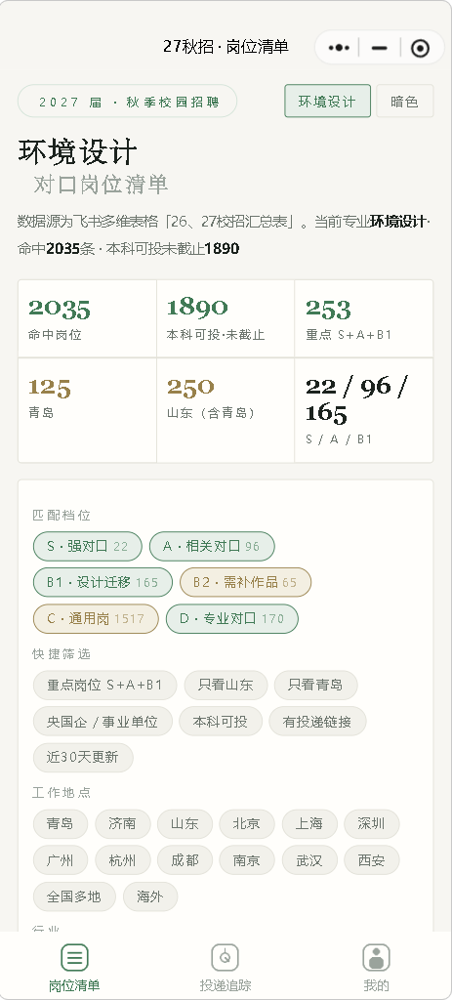
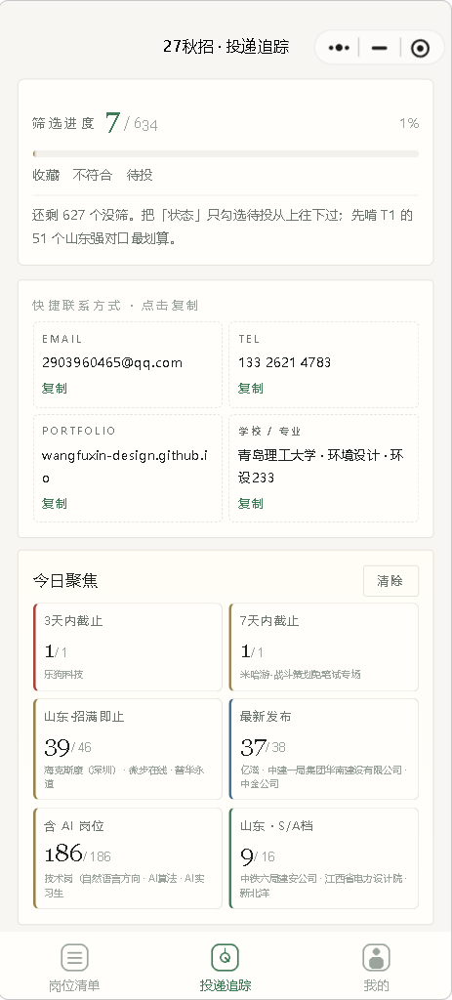
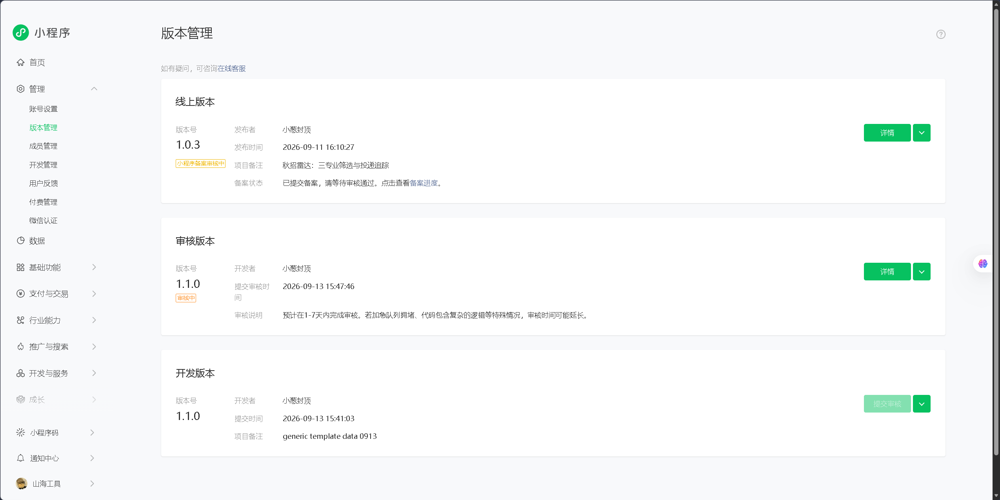
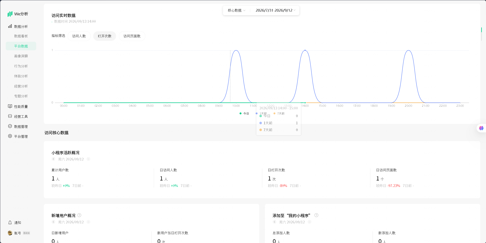

秋招雷达
27 届秋招，我是环境设计背景、想投 AI / 产品 / 交互岗——几千条校招信息里翻对口岗位太痛苦，就把这个痛点做成了产品。微信小程序「山海工具 · 秋招雷达」：接飞书多维表格数据源，按专业 / 学历 / 城市 / 匹配度分档筛选，附投递追踪与网申信息一键复制。
我自己的四个真实痛点
信息过载——秋招汇总表几千条岗位，环设背景能投的散在里面，逐条翻 JD 一上午就没了。
匹配难判断——哪些岗算"强对口"、哪些是"设计背景可迁移"、哪些投了等于陪跑，没有现成标准，全靠自己一条条读。
网申重复劳动——每投一家都要重填一遍邮箱、电话、作品集链接、学校专业，机械且易错。
怕错过——截止前 3 天的、刚发布的、招满即止的，散落各处没人提醒。
以上需求均来自我本人 2027 秋招的真实投递过程。
四个痛点，四组功能
预筛 + 分档：2035 条 → 我的 253 条
按专业预筛后，叠加「本科可投 · 未截止」，再按自研 6 档体系分层：S 强对口 / A 相关对口 / B1 设计迁移 / B2 需补作品 / C 通用 / D 专业对口——先啃 S+A+B1 的 253 条，把时间花在刀刃上。
快捷筛选：一键缩小范围
重点岗 S+A+B1、只看山东 / 青岛、央国企事业单位、有投递链接、近 30 天更新；14 个城市快捷切换。筛一次 3 秒，原来要一上午。
投递追踪 + 网申信息一键复制
收藏 / 不符合 / 待投三态管理，筛选进度可视化；邮箱、电话、作品集链接、学校专业点击即复制——该功能源于我本人在网申填报时的重复操作体验。
今日聚焦：不再错过
3 天内截止、7 天内截止、最新发布、招满即止、含 AI 岗位、本地 S/A 档——打开先看这一屏，30 秒掌握今天要处理的岗位。
产品截图


上线后的三次迭代
初版：岗位清单
打通飞书多维表格数据源，实现按专业筛选与基础岗位列表。
线上版：三专业筛选与投递追踪
9/11 发布。新增投递状态管理、网申信息快捷复制、今日聚焦；支持多专业切换。
审核中：体验优化
9/13 提交审核。细节体验与数据展示优化。

产品与开发的分工方式
项目分工：我负责产品定义、功能设计、数据筛选逻辑、测试验收与迭代决策，代码实现由 AI 完成。每一版遵循同一流程：提出需求与验收标准 → AI 实现代码 → 真机测试 → 记录问题 → 确定下一版改进点。
在这个流程中，关键的工作是明确 AI 应该做什么、检验产出是否符合预期、并决定后续迭代方向。三个版本的迭代记录，可以完整追溯这套决策过程。
当前状态与后续计划
当前 1.0.3 已上线自用，备案审核中；审核通过后计划分享到 27 届秋招群与设计专业群，目标第一批 100 个真实用户，并基于反馈迭代。
规划中的 AI 能力：接入大模型 API，实现「粘贴简历 → AI 推荐匹配档位」——把 6 档评价体系从人工规则升级为 AI 判断，让工具从"信息筛选"走向"决策辅助"。
